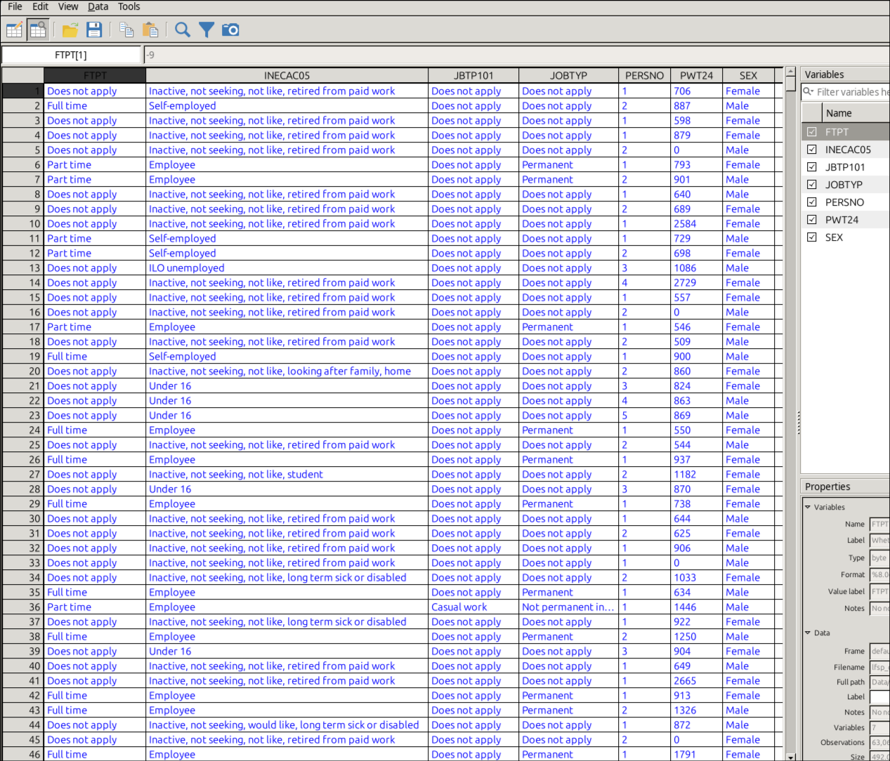

clear
cd "LFS_exercises/"
* Import the data from a Stata format dataset
use "Data/UKDA-9349-stata/stata/stata13/lfsp_od24_eul_pwt24.dta"
/home/mscsepw2/OneDrive/trainings/LFS_module/LFS_exercises/LFS_exercises
In this exercise, we will recreate an ONS labour market estimate published online in the table EMP07 Temporary Employees. Currently, this table is updated four times a year in February, May, August and November using the Quarterly Labour Force Survey (QLFS).
Learning outcomes:
The data used in this exercise relates to an estimate published by the ONS for October-December 2024.
To follow the exercise, you need to access the relevant dataset from the UK Data Service: SN 9349: Quarterly Labour Force Survey, October - December, 2024.
We suggest that you create a folder named LFS_exercises as the working directory for this exercise – where syntax files and other materials will be stored. After downloading the data, save it in an easily accessible location within LFS_exercises, such as a subfolder named Data.
… And open the QLFS dataset:
clear
cd "LFS_exercises/"
* Import the data from a Stata format dataset
use "Data/UKDA-9349-stata/stata/stata13/lfsp_od24_eul_pwt24.dta"
/home/mscsepw2/OneDrive/trainings/LFS_module/LFS_exercises/LFS_exercises
Inspect the dataset and find out the number of cases and variables.
Contains data from Data/UKDA-9349-stata/stata/stata13/lfsp_od24_eul_pwt24.dta
Observations: 63,069
Variables: 803 19 FEB 2025 11:41
Sorted by: How many variables are there?
There are 803 variables in the dataset.
As there are many variables in the dataset, let’s just keep the variables we are going to use.
Contains data from Data/UKDA-9349-stata/stata/stata13/lfsp_od24_eul_pwt24.dta
Observations: 63,069
Variables: 7 19 FEB 2025 11:41
--------------------------------------------------------------------------------
Variable Storage Display Value
name type format label Variable label
--------------------------------------------------------------------------------
FTPT byte %8.0g FTPT Whether working Full or Part Time
INECAC05 byte %8.0g INECAC05 Basic economic activity (ILO
definition) (reported)
JBTP101 byte %8.0g JBTP101 Way in which job was not permanent
- 1
JOBTYP byte %8.0g JOBTYP Permanent or temporary job
PERSNO byte %8.0g PERSNO Person number within household
PWT24 int %8.0g PWT24 Person weight 2024
SEX byte %8.0g SEX Sex of respondent
--------------------------------------------------------------------------------
Sorted by:
Note: Dataset has changed since last saved.We can have a look at the raw data by using browse

Now let’s examine in more detail the variables we are going to work with.
Variable | Obs Mean Std. dev. Min Max
-------------+---------------------------------------------------------
JBTP101 | 63,069 -8.758867 1.706416 -9 5
FTPT | 63,069 -3.975408 5.142732 -9 4
INECAC05 | 63,069 15.62043 14.93319 1 34
JOBTYP | 63,069 -4.800996 4.95732 -9 2
SEX | 63,069 1.518099 .4996763 1 2This is not very meaningful. Let’s use frequency tables instead:
Whether |
working Full |
or Part Time | Freq. Percent Cum.
---------------+-----------------------------------
Does not apply | 32,189 51.04 51.04
No answer | 25 0.04 51.08
Full time | 22,538 35.74 86.81
Part time | 8,314 13.18 100.00
New Deal-FT | 2 0.00 100.00
New Deal-PT | 1 0.00 100.00
---------------+-----------------------------------
Total | 63,069 100.00
Way in which job was not permanent - 1 | Freq. Percent Cum.
---------------------------------------+-----------------------------------
Does not apply | 61,818 98.02 98.02
No answer | 2 0.00 98.02
Working for an employment agency | 175 0.28 98.30
Casual work | 302 0.48 98.78
Seasonal work | 77 0.12 98.90
Under contract for a fixed period/task | 520 0.82 99.72
Other reason | 175 0.28 100.00
---------------------------------------+-----------------------------------
Total | 63,069 100.00
Basic economic activity (ILO |
definition) (reported) | Freq. Percent Cum.
----------------------------------------+-----------------------------------
Employee | 26,365 41.80 41.80
Self-employed | 4,387 6.96 48.76
Government employment & training progra | 47 0.07 48.83
Unpaid family worker | 100 0.16 48.99
ILO unemployed | 1,081 1.71 50.71
Inactive, seeking, unavailable, student | 76 0.12 50.83
Inactive, seeking, unavailable, looking | 36 0.06 50.88
Inactive, seeking, unavailable, tempora | 8 0.01 50.90
Inactive, seeking, unavailable, long-te | 19 0.03 50.93
Inactive, seeking, unavailable, other r | 78 0.12 51.05
Inactive, seeking, unavailable, no reas | 14 0.02 51.07
Inactive, not seeking, would like, wait | 19 0.03 51.10
Inactive, not seeking, would like, stud | 197 0.31 51.42
Inactive, not seeking, would like, look | 280 0.44 51.86
Inactive, not seeking, would like, temp | 82 0.13 51.99
Inactive, not seeking, would like, long | 575 0.91 52.90
Inactive, not seeking, would like, beli | 20 0.03 52.93
Inactive, not seeking, would like, not | 60 0.10 53.03
Inactive, not seeking, would like, does | 35 0.06 53.08
Inactive, not seeking, would like, reti | 85 0.13 53.22
Inactive, not seeking, would like, othe | 106 0.17 53.39
Inactive, not seeking, would like, no r | 1 0.00 53.39
Inactive, not seeking, not like, waitin | 10 0.02 53.40
Inactive, not seeking, not like, studen | 1,552 2.46 55.86
Inactive, not seeking, not like, lookin | 1,204 1.91 57.77
Inactive, not seeking, not like, tempor | 95 0.15 57.92
Inactive, not seeking, not like, long t | 2,041 3.24 61.16
Inactive, not seeking, not like, believ | 11 0.02 61.18
Inactive, not seeking, not like, not ye | 49 0.08 61.26
Inactive, not seeking, not like, does n | 339 0.54 61.79
Inactive, not seeking, not like, retire | 12,227 19.39 81.18
Inactive, not seeking, not like, other | 229 0.36 81.54
Inactive, not seeking, not like, no rea | 182 0.29 81.83
Under 16 | 11,459 18.17 100.00
----------------------------------------+-----------------------------------
Total | 63,069 100.00
Permanent or temporary |
job | Freq. Percent Cum.
--------------------------+-----------------------------------
Does not apply | 36,698 58.19 58.19
No answer | 15 0.02 58.21
Permanent | 25,104 39.80 98.01
Not permanent in some way | 1,252 1.99 100.00
--------------------------+-----------------------------------
Total | 63,069 100.00
Sex of |
respondent | Freq. Percent Cum.
---------------+-----------------------------------
Male | 30,393 48.19 48.19
Female | 32,676 51.81 100.00
---------------+-----------------------------------
Total | 63,069 100.00How many cases are there?
What does the variable INECAC05 relate to?
Why are there many missing cases on the variables: JBTP101, FTPT and JOBTYP?
There are 63,069 cases
INECAC05 records self-reported basic economic activity (ILO definition)
Respondents not in employment are coded as missing values for these variables. Missing values were recorded as -9 “Does not apply” and -8 “No answer” in the original data.
In order to provide reliable estimates of population values, survey data needs to be weighted when analysed. Weights are variables whose values increase or decrease the relative importance of observations, depending on how likely respondents were to take part to the survey. Some weights are only designed to correct the relative importance of observations, whereas others in addition also enable calculating population totals - the latter are called grossing weights.
Below, we compare weighted and unweighted frequencies and percentages.
We will be using Stata’s survey commands.
Let us first examine again the variable measuring - JOBTYP - whether respondents work in a temporary job or not:
Permanent or temporary |
job | Freq. Percent Cum.
--------------------------+-----------------------------------
Does not apply | 36,698 58.19 58.19
No answer | 15 0.02 58.21
Permanent | 25,104 39.80 98.01
Not permanent in some way | 1,252 1.99 100.00
--------------------------+-----------------------------------
Total | 63,069 100.00
Permanent |
or |
temporary |
job | Freq. Percent Cum.
------------+-----------------------------------
-9 | 36,698 58.19 58.19
-8 | 15 0.02 58.21
1 | 25,104 39.80 98.01
2 | 1,252 1.99 100.00
------------+-----------------------------------
Total | 63,069 100.00… and create a version with missing values recoded as system missing.
gen JobTmp = 0
replace JobTmp = 1 if JOBTYP==2
replace JobTmp = . if JOBTYP == -8 | JOBTYP == -9
lab var JobTmp "Whether main job is temporary"
lab def JobTmp 0 "Not temporary" 1 "Temporary"
lab val JobTmp JobTmp
tab JobTmp JOBTYP, missing
(1,252 real changes made)
(36,713 real changes made, 36,713 to missing)
Whether main |
job is | Permanent or temporary job
temporary | Does not No answer Permanent Not perma | Total
--------------+--------------------------------------------+----------
Not temporary | 0 0 25,104 0 | 25,104
Temporary | 0 0 0 1,252 | 1,252
. | 36,698 15 0 0 | 36,713
--------------+--------------------------------------------+----------
Total | 36,698 15 25,104 1,252 | 63,069 We then declare the the data to be weightey survey data:
Sampling weights: PWT24
VCE: linearized
Single unit: missing
Strata 1: <one>
Sampling unit 1: <observations>
FPC 1: <zero>We can now compute the weighted totals and percentages:
(running tabulate on estimation sample)
Number of strata = 1 Number of obs = 26,356
Number of PSUs = 26,356 Population size = 29,316,306
Design df = 26,355
----------------------
Whether |
main job |
is |
temporary | percentage
----------+-----------
Not temp | 94.83
Temporar | 5.165
|
Total | 100
----------------------
Key: percentage = Cell percentage
(running tabulate on estimation sample)
Number of strata = 1 Number of obs = 63,069
Number of PSUs = 63,069 Population size = 68,185,623
Design df = 63,068
----------------------
Permanent |
or |
temporary |
job | count
----------+-----------
Does not | 38847285
No answe | 22032
Permanen | 27802100
Not perm | 1514206
|
Total | 68185623
----------------------
Key: count = Weighted countDo the frequencies change noticeably when the weight is applied?
Using the code we used to create JobTmp above as guide, create a variable to indicate those working part time and examine their weighted and unweighted frequencies. You are going to need this variable later.
Yes, the frequencies change quite a lot once we apply the weights — they become much higher. This is because the weights in the Labour Force Survey (LFS) are designed to sum to known population totals. That makes it easier to estimate overall population values like totals, means, and proportions.
The LFS weights also account for the survey’s sample design: individuals who had a lower chance of being selected are given higher weights to correct for that. They also help adjust for different levels of non-response across subgroups in the population, which means the results are more likely to reflect the population accurately.
The syntax below computes a variable recording whether respondents work part-time or not and produce weighted frequency tables.
ta FTPT, nol
recode FTPT 1 3 =0 2 4 = 1 -8 -9 = ., gen(PartTime)
lab var PartTime "Whether main job is part-time"
lab def PartTime 0 "Not part-time" 1 "Part-time"
lab val PartTime PartTime
### Checking the result
tab FTPT PartTime, missing
### Computing the weighted totals
svy:tab PartTime,count format(%9.0f)
Whether |
working |
Full or |
Part Time | Freq. Percent Cum.
------------+-----------------------------------
-9 | 32,189 51.04 51.04
-8 | 25 0.04 51.08
1 | 22,538 35.74 86.81
2 | 8,314 13.18 100.00
3 | 2 0.00 100.00
4 | 1 0.00 100.00
------------+-----------------------------------
Total | 63,069 100.00
(63,069 differences between FTPT and PartTime)
Unknown #command
Whether |
working Full | Whether main job is part-time
or Part Time | Not part- Part-time . | Total
---------------+---------------------------------+----------
Does not apply | 0 0 32,189 | 32,189
No answer | 0 0 25 | 25
Full time | 22,538 0 0 | 22,538
Part time | 0 8,314 0 | 8,314
New Deal-FT | 2 0 0 | 2
New Deal-PT | 0 1 0 | 1
---------------+---------------------------------+----------
Total | 22,540 8,315 32,214 | 63,069
Unknown #command
(running tabulate on estimation sample)
Number of strata = 1 Number of obs = 30,855
Number of PSUs = 30,855 Population size = 33,833,882
Design df = 30,854
----------------------
Whether |
main job |
is |
part-time | count
----------+-----------
Not part | 25430151
Part-tim | 8403731
|
Total | 33833882
----------------------
Key: count = Weighted countWe can obtain the percentages of full-time and part-time employees by job tenure, by creating a contingency table:
(running tabulate on estimation sample)
Number of strata = 1 Number of obs = 26,351
Number of PSUs = 26,351 Population size = 29,310,416
Design df = 26,350
----------------------------------------
Whether |
main job |
is |Whether main job is temporary
part-time | Not temp Temporar Total
----------+-----------------------------
Not part | 21736784 700619 22437403
Part-tim | 6060549 812464 6873013
|
Total | 27797333 1513083 29310416
----------------------------------------
Key: Weighted count
Pearson:
Uncorrected chi2(1) = 731.0418
Design-based F(1, 26350) = 501.5351 P = 0.0000We can simultaneously examine the number of temporary and part-time employees by gender by using the subpop option.
Sex of |
respondent | Freq. Percent Cum.
---------------+-----------------------------------
Male | 30,393 48.19 48.19
Female | 32,676 51.81 100.00
---------------+-----------------------------------
Total | 63,069 100.00
SEX==Female | Freq. Percent Cum.
------------+-----------------------------------
0 | 30,393 48.19 48.19
1 | 32,676 51.81 100.00
------------+-----------------------------------
Total | 63,069 100.00*** Totals by sex
svy,subpop(sex1):tab PartTime JobTmp,count format(%9.0f)
svy,subpop(sex2):tab PartTime JobTmp,count format(%9.0f)
(running tabulate on estimation sample)
Number of strata = 1 Number of obs = 45,187
Number of PSUs = 45,187 Population size = 49,318,075
Subpop. no. obs = 12,491
Subpop. size = 14,566,346
Design df = 45,186
----------------------------------------
Whether |
main job |
is |Whether main job is temporary
part-time | Not temp Temporar Total
----------+-----------------------------
Not part | 12376870 386524 12763394
Part-tim | 1466001 336951 1802952
|
Total | 13842871 723475 14566346
----------------------------------------
Key: Weighted count
Pearson:
Uncorrected chi2(1) = 2546.3833
Design-based F(1, 45186) = 465.8067 P = 0.0000
(running tabulate on estimation sample)
Number of strata = 1 Number of obs = 44,233
Number of PSUs = 44,233 Population size = 48,177,964
Subpop. no. obs = 13,831
Subpop. size = 14,744,070
Design df = 44,232
----------------------------------------
Whether |
main job |
is |Whether main job is temporary
part-time | Not temp Temporar Total
----------+-----------------------------
Not part | 9359914 314095 9674009
Part-tim | 4594548 475513 5070061
|
Total | 13954462 789608 14744070
----------------------------------------
Key: Weighted count
Pearson:
Uncorrected chi2(1) = 740.3766
Design-based F(1, 44232) = 167.5081 P = 0.0000How many people are temporary employees (all and part-time) in this quarter?
How many females are in part-time temporary employment?
How can we find out the number of applicable cases for men in part-time temporary employment - ie the number of cases in the sample used to calculate the population counts?
There are 1,513,083 temporary employees, of which 812,464 part-time.
There are 475,513 females in part-time temporary employment
In order to get the number of applicable cases, we need to look at the unweighted frequencies of SEX by JobTmp by PartTime. The number of (unweighted) valid cases for this analysis is only 288 respondents.
--------------------------------------------------------------------------------
-> SEX = Male
Whether main | Whether main job is
job is | part-time
temporary | Not part- Part-time | Total
--------------+----------------------+----------
Not temporary | 10,631 1,319 | 11,950
Temporary | 273 288 | 561
--------------+----------------------+----------
Total | 10,904 1,607 | 12,511
--------------------------------------------------------------------------------
-> SEX = Female
Whether main | Whether main job is
job is | part-time
temporary | Not part- Part-time | Total
--------------+----------------------+----------
Not temporary | 8,534 4,616 | 13,150
Temporary | 247 443 | 690
--------------+----------------------+----------
Total | 8,781 5,059 | 13,840
Note: You can check if your results match those in the ONS EMP07 dataset.